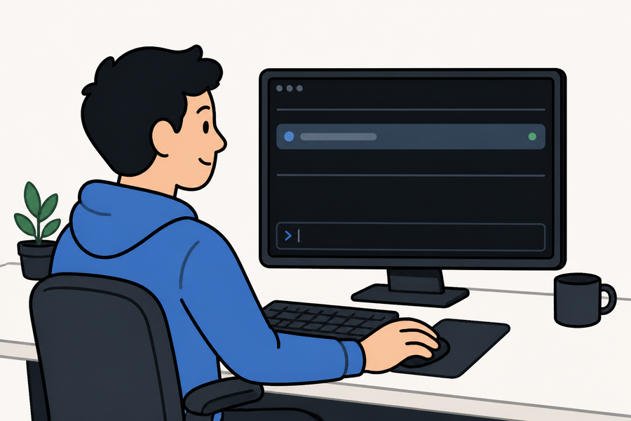
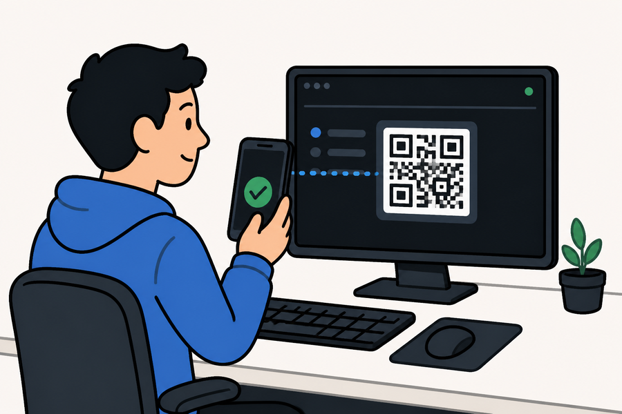
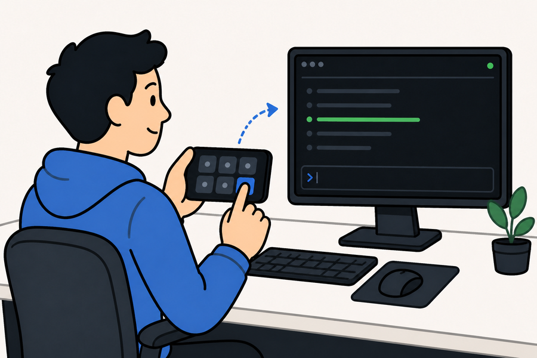
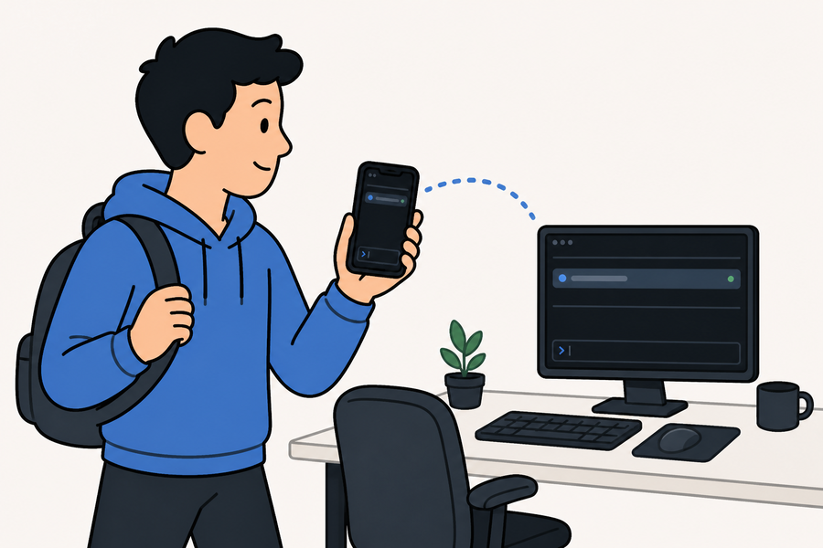

how it goes
Desk to pocket, four frames.

One command at the desk
agenton vpn (or lan) starts the daemon, the web server, and the TUI — and prints a QR on screen.

Scan the code on screen
Point the iOS app at it — or your plain camera for the web client (agenton qr --web). Connected. Nothing to type.

The phone is the desk gadget
Lay it on the desk and it's a button pad for the big screen — accept, reject, arrows, hold-to-talk. Tap a key and the session reacts.

Walk out mid-run
Pocket the phone and leave. Over your tailnet the session follows you anywhere — nothing stops, nothing reconnects.